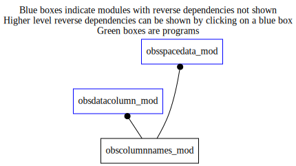

Dependency Diagrams:
No Direct Dependency
 Reverse Dependency Diagram¶
Description
MODULE obsColumnNames_mod (prefix=’ocn’ category=’7. Low-level data objects and utilities’)
- Purpose
This module simply groups together many fortran paramters that serve as column names for ObsSpaceData_mod.
- NOTE
This module is logistically a part of the ObsSpaceData_mod module. In fact, if fortran allowed it, ObsColumnNames_mod would be ‘contain’ed inside the ObsSpaceData_mod module. For this reason, and more importantly because these parameters constitute a part of the visible (from outside ObsSpaceData_mod) interface to ObsSpaceData_mod, the parameters defined in this module carry the prefix, OBS, and not CN.
Quick access
- Variables
nbdy_int_beg,nbdy_int_end,nbdy_int_size,nbdy_real_beg,nbdy_real_end,nbdy_real_size,nhdr_int_beg,nhdr_int_end,nhdr_int_size,nhdr_real_beg,nhdr_real_end,nhdr_real_size,ocn_columnnamelist_ib,ocn_columnnamelist_ih,ocn_columnnamelist_rb,ocn_columnnamelist_rhVariables
- obscolumnnames_mod/nbdy_int_beg [integer,public/parameter]¶
- obscolumnnames_mod/nbdy_int_end [integer,public/parameter]¶
- obscolumnnames_mod/nbdy_int_size [integer,public/parameter]¶
- obscolumnnames_mod/nbdy_real_beg [integer,public/parameter]¶
- obscolumnnames_mod/nbdy_real_end [integer,public/parameter]¶
- obscolumnnames_mod/nbdy_real_size [integer,public/parameter]¶
- obscolumnnames_mod/nhdr_int_beg [integer,public/parameter]¶
- obscolumnnames_mod/nhdr_int_end [integer,public/parameter]¶
- obscolumnnames_mod/nhdr_int_size [integer,public/parameter]¶
- obscolumnnames_mod/nhdr_real_beg [integer,public/parameter]¶
- obscolumnnames_mod/nhdr_real_end [integer,public/parameter]¶
- obscolumnnames_mod/nhdr_real_size [integer,public/parameter]¶
- obscolumnnames_mod/obs_alt [integer,public/parameter]¶
station altitude
- obscolumnnames_mod/obs_aqf1 [integer,public/parameter]¶
ATMS Geolocalisation Quality Control Flag
- obscolumnnames_mod/obs_aqf2 [integer,public/parameter]¶
ATMS Granule Level Quality Control Flag
- obscolumnnames_mod/obs_aqf3 [integer,public/parameter]¶
ATMS Scan Level Quality Control Flag
- obscolumnnames_mod/obs_ass [integer,public/parameter]¶
flag to indicate if assimilated
- obscolumnnames_mod/obs_aza [integer,public/parameter]¶
satellite azimuthal angle
- obscolumnnames_mod/obs_bcor [integer,public/parameter]¶
observation bias correction
- obscolumnnames_mod/obs_btcl [integer,public/parameter]¶
clear-sky simulated observation
- obscolumnnames_mod/obs_bx [integer,public/parameter]¶
x-coordinate of block in R3
- obscolumnnames_mod/obs_by [integer,public/parameter]¶
y-coordinate of block in R3
- obscolumnnames_mod/obs_bz [integer,public/parameter]¶
z-coordinate of block in R3
- obscolumnnames_mod/obs_cf1 [integer,public/parameter]¶
AVHRR fraction of class 1
- obscolumnnames_mod/obs_cf2 [integer,public/parameter]¶
AVHRR fraction of class 2
- obscolumnnames_mod/obs_cf3 [integer,public/parameter]¶
AVHRR fraction of class 3
- obscolumnnames_mod/obs_cf4 [integer,public/parameter]¶
AVHRR fraction of class 4
- obscolumnnames_mod/obs_cf5 [integer,public/parameter]¶
AVHRR fraction of class 5
- obscolumnnames_mod/obs_cf6 [integer,public/parameter]¶
AVHRR fraction of class 6
- obscolumnnames_mod/obs_cf7 [integer,public/parameter]¶
AVHRR fraction of class 7
- obscolumnnames_mod/obs_chid [integer,public/parameter]¶
id. no. of ice chart
- obscolumnnames_mod/obs_chm [integer,public/parameter]¶
BUFR code (table 08046) of constituent type (for the CH family)
- obscolumnnames_mod/obs_cla [integer,public/parameter]¶
csr cloud amount btyp 9248 ele 020081
- obscolumnnames_mod/obs_clf [integer,public/parameter]¶
cloud fraction
- obscolumnnames_mod/obs_clwb [integer,public/parameter]¶
cloud liquid water retrieved from background
- obscolumnnames_mod/obs_clwo [integer,public/parameter]¶
cloud liquid water retrieved from observation
- obscolumnnames_mod/obs_crps [integer,public/parameter]¶
Continuous Ranked Probability Score
- obscolumnnames_mod/obs_dat [integer,public/parameter]¶
observation date YYYYMMD
- obscolumnnames_mod/obs_ecf [integer,public/parameter]¶
CO2 slicing effective cloud fraction
- obscolumnnames_mod/obs_etm [integer,public/parameter]¶
observation time HHMM
- obscolumnnames_mod/obs_etop [integer,public/parameter]¶
CO2 slicing consensus (median) cloud top pressure
- obscolumnnames_mod/obs_flg [integer,public/parameter]¶
flags
- obscolumnnames_mod/obs_fov [integer,public/parameter]¶
field of view
- obscolumnnames_mod/obs_fso [integer,public/parameter]¶
forecast sensitivity to observations
- obscolumnnames_mod/obs_geoi [integer,public/parameter]¶
Geoid Undulation Metres
- obscolumnnames_mod/obs_gqf [integer,public/parameter]¶
iasi GQISFLAGQUAL: general quality flag which indicates,
- obscolumnnames_mod/obs_gql [integer,public/parameter]¶
iasi GQISQUALINDEXLOC: It is defined as the uncertainty of the
- obscolumnnames_mod/obs_haht [integer,public/parameter]¶
root of (hp_{a}ht with hx scalar)
- obscolumnnames_mod/obs_hdd [integer,public/parameter]¶
date in burp header
- obscolumnnames_mod/obs_hdt [integer,public/parameter]¶
time in burp header
- obscolumnnames_mod/obs_he [integer,public/parameter]¶
cloud effective height (one channel)
- obscolumnnames_mod/obs_hind [integer,public/parameter]¶
corresponding header row index
- obscolumnnames_mod/obs_hpht [integer,public/parameter]¶
root of (hpht with hx scalar)
- obscolumnnames_mod/obs_idf [integer,public/parameter]¶
id. no. of observation-source file
- obscolumnnames_mod/obs_infg [integer,public/parameter]¶
SATPLOT INFO FLAG for TOVS
- obscolumnnames_mod/obs_ins [integer,public/parameter]¶
instrument ID
- obscolumnnames_mod/obs_ip [integer,public/parameter]¶
number of mpi processors
- obscolumnnames_mod/obs_ipc [integer,public/parameter]¶
mpi task id for column/obsspacedata
- obscolumnnames_mod/obs_ipf [integer,public/parameter]¶
mpi task id for file
- obscolumnnames_mod/obs_ipt [integer,public/parameter]¶
mpi task id for latlontile
- obscolumnnames_mod/obs_ity [integer,public/parameter]¶
code: instrument & retrieval type
- obscolumnnames_mod/obs_iwv [integer,public/parameter]¶
atmospheric integrated water vapor for ssmis
- obscolumnnames_mod/obs_jobs [integer,public/parameter]¶
contribution to obs cost function
- obscolumnnames_mod/obs_kfa [integer,public/parameter]¶
marker for forward interp problems
- obscolumnnames_mod/obs_lat [integer,public/parameter]¶
latitude in radians (N positive)
- obscolumnnames_mod/obs_latd [integer,public/parameter]¶
obs LATitude in Data table (radians)
- obscolumnnames_mod/obs_lch [integer,public/parameter]¶
launch time (hhmm)
- obscolumnnames_mod/obs_lflg [integer,public/parameter]¶
flag for hi-res lat element
- obscolumnnames_mod/obs_loci [integer,public/parameter]¶
LOCation Information for observation (e.g. range along radar beam)
- obscolumnnames_mod/obs_lon [integer,public/parameter]¶
longitude in radians (E positive)
- obscolumnnames_mod/obs_lond [integer,public/parameter]¶
obs LONgitude in Data table (radians)
- obscolumnnames_mod/obs_lyr [integer,public/parameter]¶
Index of anal level above observ’n
- obscolumnnames_mod/obs_m1c1 [integer,public/parameter]¶
mean for class 1 AVHRR channel 1
- obscolumnnames_mod/obs_m1c2 [integer,public/parameter]¶
mean for class 1 AVHRR channel 2
- obscolumnnames_mod/obs_m1c3 [integer,public/parameter]¶
mean for class 1 AVHRR channel 3
- obscolumnnames_mod/obs_m1c4 [integer,public/parameter]¶
mean for class 1 AVHRR channel 4
- obscolumnnames_mod/obs_m1c5 [integer,public/parameter]¶
mean for class 1 AVHRR channel 5
- obscolumnnames_mod/obs_m1c6 [integer,public/parameter]¶
mean for class 1 AVHRR channel 6
- obscolumnnames_mod/obs_m2c1 [integer,public/parameter]¶
mean for class 2 AVHRR channel 1
- obscolumnnames_mod/obs_m2c2 [integer,public/parameter]¶
mean for class 2 AVHRR channel 2
- obscolumnnames_mod/obs_m2c3 [integer,public/parameter]¶
mean for class 2 AVHRR channel 3
- obscolumnnames_mod/obs_m2c4 [integer,public/parameter]¶
mean for class 2 AVHRR channel 4
- obscolumnnames_mod/obs_m2c5 [integer,public/parameter]¶
mean for class 2 AVHRR channel 5
- obscolumnnames_mod/obs_m2c6 [integer,public/parameter]¶
mean for class 2 AVHRR channel 6
- obscolumnnames_mod/obs_m3c1 [integer,public/parameter]¶
mean for class 3 AVHRR channel 1
- obscolumnnames_mod/obs_m3c2 [integer,public/parameter]¶
mean for class 3 AVHRR channel 2
- obscolumnnames_mod/obs_m3c3 [integer,public/parameter]¶
mean for class 3 AVHRR channel 3
- obscolumnnames_mod/obs_m3c4 [integer,public/parameter]¶
mean for class 3 AVHRR channel 4
- obscolumnnames_mod/obs_m3c5 [integer,public/parameter]¶
mean for class 3 AVHRR channel 5
- obscolumnnames_mod/obs_m3c6 [integer,public/parameter]¶
mean for class 3 AVHRR channel 6
- obscolumnnames_mod/obs_m4c1 [integer,public/parameter]¶
mean for class 4 AVHRR channel 1
- obscolumnnames_mod/obs_m4c2 [integer,public/parameter]¶
mean for class 4 AVHRR channel 2
- obscolumnnames_mod/obs_m4c3 [integer,public/parameter]¶
mean for class 4 AVHRR channel 3
- obscolumnnames_mod/obs_m4c4 [integer,public/parameter]¶
mean for class 4 AVHRR channel 4
- obscolumnnames_mod/obs_m4c5 [integer,public/parameter]¶
mean for class 4 AVHRR channel 5
- obscolumnnames_mod/obs_m4c6 [integer,public/parameter]¶
mean for class 4 AVHRR channel 6
- obscolumnnames_mod/obs_m5c1 [integer,public/parameter]¶
mean for class 5 AVHRR channel 1
- obscolumnnames_mod/obs_m5c2 [integer,public/parameter]¶
mean for class 5 AVHRR channel 2
- obscolumnnames_mod/obs_m5c3 [integer,public/parameter]¶
mean for class 5 AVHRR channel 3
- obscolumnnames_mod/obs_m5c4 [integer,public/parameter]¶
mean for class 5 AVHRR channel 4
- obscolumnnames_mod/obs_m5c5 [integer,public/parameter]¶
mean for class 5 AVHRR channel 5
- obscolumnnames_mod/obs_m5c6 [integer,public/parameter]¶
mean for class 5 AVHRR channel 6
- obscolumnnames_mod/obs_m6c1 [integer,public/parameter]¶
mean for class 6 AVHRR channel 1
- obscolumnnames_mod/obs_m6c2 [integer,public/parameter]¶
mean for class 6 AVHRR channel 2
- obscolumnnames_mod/obs_m6c3 [integer,public/parameter]¶
mean for class 6 AVHRR channel 3
- obscolumnnames_mod/obs_m6c4 [integer,public/parameter]¶
mean for class 6 AVHRR channel 4
- obscolumnnames_mod/obs_m6c5 [integer,public/parameter]¶
mean for class 6 AVHRR channel 5
- obscolumnnames_mod/obs_m6c6 [integer,public/parameter]¶
mean for class 6 AVHRR channel 6
- obscolumnnames_mod/obs_m7c1 [integer,public/parameter]¶
mean for class 7 AVHRR channel 1
- obscolumnnames_mod/obs_m7c2 [integer,public/parameter]¶
mean for class 7 AVHRR channel 2
- obscolumnnames_mod/obs_m7c3 [integer,public/parameter]¶
mean for class 7 AVHRR channel 3
- obscolumnnames_mod/obs_m7c4 [integer,public/parameter]¶
mean for class 7 AVHRR channel 4
- obscolumnnames_mod/obs_m7c5 [integer,public/parameter]¶
mean for class 7 AVHRR channel 5
- obscolumnnames_mod/obs_m7c6 [integer,public/parameter]¶
mean for class 7 AVHRR channel 6
- obscolumnnames_mod/obs_mws [integer,public/parameter]¶
model wind speed (in ASCAT data)
- obscolumnnames_mod/obs_nco2 [integer,public/parameter]¶
NCO2: number of valid CO2 slicing estimates (AIRS,IASI,CrIS)
- obscolumnnames_mod/obs_nlv [integer,public/parameter]¶
number of data at this location
- obscolumnnames_mod/obs_oer [integer,public/parameter]¶
sigma(obs)
- obscolumnnames_mod/obs_oma [integer,public/parameter]¶
obs - H (analysis mean)
- obscolumnnames_mod/obs_oma0 [integer,public/parameter]¶
obs - H (analysis at central time)
- obscolumnnames_mod/obs_omam [integer,public/parameter]¶
obs - H (analysis member)
- obscolumnnames_mod/obs_omp [integer,public/parameter]¶
obs - H (trial field)
- obscolumnnames_mod/obs_omp6 [integer,public/parameter]¶
obs - H (6-h trial field)
- obscolumnnames_mod/obs_ompe [integer,public/parameter]¶
error standard deviation of [obs - H (trial field)]
- obscolumnnames_mod/obs_onm [integer,public/parameter]¶
ordered, station id number
- obscolumnnames_mod/obs_orbi [integer,public/parameter]¶
satellite orbit index
- obscolumnnames_mod/obs_ori [integer,public/parameter]¶
originating centre code
- obscolumnnames_mod/obs_otp [integer,public/parameter]¶
observation Type (file index)
- obscolumnnames_mod/obs_pas [integer,public/parameter]¶
batch no. in sequential analysis
- obscolumnnames_mod/obs_phas [integer,public/parameter]¶
phase of flight
- obscolumnnames_mod/obs_pob [integer,public/parameter]¶
initial value of “gamma” for variational QC
- obscolumnnames_mod/obs_ppp [integer,public/parameter]¶
vertical coordinate
- obscolumnnames_mod/obs_prfl [integer,public/parameter]¶
profile id. number
- obscolumnnames_mod/obs_prm [integer,public/parameter]¶
(adjusted) observed value for tovs in variational assimilation
- obscolumnnames_mod/obs_qcf2 [integer,public/parameter]¶
TOVs Data Level Qc Flag
- obscolumnnames_mod/obs_qcv [integer,public/parameter]¶
weight-reduction factor for var QC
- obscolumnnames_mod/obs_rain [integer,public/parameter]¶
UKMO rain flag for ssmis obs
- obscolumnnames_mod/obs_rane [integer,public/parameter]¶
Final range of the Radar beam
- obscolumnnames_mod/obs_rans [integer,public/parameter]¶
Initial range of the Radar beam
- obscolumnnames_mod/obs_reg [integer,public/parameter]¶
region number in the batch
- obscolumnnames_mod/obs_rele [integer,public/parameter]¶
Elevation of the Radar beam (radians)
- obscolumnnames_mod/obs_rln [integer,public/parameter]¶
report location
- obscolumnnames_mod/obs_roqf [integer,public/parameter]¶
QUALITY FLAGS FOR RADIO OCCULTATION DATA
- obscolumnnames_mod/obs_rtp [integer,public/parameter]¶
radiosonde type code
- obscolumnnames_mod/obs_rzam [integer,public/parameter]¶
Azimuth of the Radar beam (radians)
- obscolumnnames_mod/obs_s1c1 [integer,public/parameter]¶
stdev for class 1 AVHRR channel 1
- obscolumnnames_mod/obs_s1c2 [integer,public/parameter]¶
stdev for class 1 AVHRR channel 2
- obscolumnnames_mod/obs_s1c3 [integer,public/parameter]¶
stdev for class 1 AVHRR channel 3
- obscolumnnames_mod/obs_s1c4 [integer,public/parameter]¶
stdev for class 1 AVHRR channel 4
- obscolumnnames_mod/obs_s1c5 [integer,public/parameter]¶
stdev for class 1 AVHRR channel 5
- obscolumnnames_mod/obs_s1c6 [integer,public/parameter]¶
stdev for class 1 AVHRR channel 6
- obscolumnnames_mod/obs_s2c1 [integer,public/parameter]¶
stdev for class 2 AVHRR channel 1
- obscolumnnames_mod/obs_s2c2 [integer,public/parameter]¶
stdev for class 2 AVHRR channel 2
- obscolumnnames_mod/obs_s2c3 [integer,public/parameter]¶
stdev for class 2 AVHRR channel 3
- obscolumnnames_mod/obs_s2c4 [integer,public/parameter]¶
stdev for class 2 AVHRR channel 4
- obscolumnnames_mod/obs_s2c5 [integer,public/parameter]¶
stdev for class 2 AVHRR channel 5
- obscolumnnames_mod/obs_s2c6 [integer,public/parameter]¶
stdev for class 2 AVHRR channel 6
- obscolumnnames_mod/obs_s3c1 [integer,public/parameter]¶
stdev for class 3 AVHRR channel 1
- obscolumnnames_mod/obs_s3c2 [integer,public/parameter]¶
stdev for class 3 AVHRR channel 2
- obscolumnnames_mod/obs_s3c3 [integer,public/parameter]¶
stdev for class 3 AVHRR channel 3
- obscolumnnames_mod/obs_s3c4 [integer,public/parameter]¶
stdev for class 3 AVHRR channel 4
- obscolumnnames_mod/obs_s3c5 [integer,public/parameter]¶
stdev for class 3 AVHRR channel 5
- obscolumnnames_mod/obs_s3c6 [integer,public/parameter]¶
stdev for class 3 AVHRR channel 6
- obscolumnnames_mod/obs_s4c1 [integer,public/parameter]¶
stdev for class 4 AVHRR channel 1
- obscolumnnames_mod/obs_s4c2 [integer,public/parameter]¶
stdev for class 4 AVHRR channel 2
- obscolumnnames_mod/obs_s4c3 [integer,public/parameter]¶
stdev for class 4 AVHRR channel 3
- obscolumnnames_mod/obs_s4c4 [integer,public/parameter]¶
stdev for class 4 AVHRR channel 4
- obscolumnnames_mod/obs_s4c5 [integer,public/parameter]¶
stdev for class 4 AVHRR channel 5
- obscolumnnames_mod/obs_s4c6 [integer,public/parameter]¶
stdev for class 4 AVHRR channel 6
- obscolumnnames_mod/obs_s5c1 [integer,public/parameter]¶
stdev for class 5 AVHRR channel 1
- obscolumnnames_mod/obs_s5c2 [integer,public/parameter]¶
stdev for class 5 AVHRR channel 2
- obscolumnnames_mod/obs_s5c3 [integer,public/parameter]¶
stdev for class 5 AVHRR channel 3
- obscolumnnames_mod/obs_s5c4 [integer,public/parameter]¶
stdev for class 5 AVHRR channel 4
- obscolumnnames_mod/obs_s5c5 [integer,public/parameter]¶
stdev for class 5 AVHRR channel 5
- obscolumnnames_mod/obs_s5c6 [integer,public/parameter]¶
stdev for class 5 AVHRR channel 6
- obscolumnnames_mod/obs_s6c1 [integer,public/parameter]¶
stdev for class 6 AVHRR channel 1
- obscolumnnames_mod/obs_s6c2 [integer,public/parameter]¶
stdev for class 6 AVHRR channel 2
- obscolumnnames_mod/obs_s6c3 [integer,public/parameter]¶
stdev for class 6 AVHRR channel 3
- obscolumnnames_mod/obs_s6c4 [integer,public/parameter]¶
stdev for class 6 AVHRR channel 4
- obscolumnnames_mod/obs_s6c5 [integer,public/parameter]¶
stdev for class 6 AVHRR channel 5
- obscolumnnames_mod/obs_s6c6 [integer,public/parameter]¶
stdev for class 6 AVHRR channel 6
- obscolumnnames_mod/obs_s7c1 [integer,public/parameter]¶
stdev for class 7 AVHRR channel 1
- obscolumnnames_mod/obs_s7c2 [integer,public/parameter]¶
stdev for class 7 AVHRR channel 2
- obscolumnnames_mod/obs_s7c3 [integer,public/parameter]¶
stdev for class 7 AVHRR channel 3
- obscolumnnames_mod/obs_s7c4 [integer,public/parameter]¶
stdev for class 7 AVHRR channel 4
- obscolumnnames_mod/obs_s7c5 [integer,public/parameter]¶
stdev for class 7 AVHRR channel 5
- obscolumnnames_mod/obs_s7c6 [integer,public/parameter]¶
stdev for class 7 AVHRR channel 6
- obscolumnnames_mod/obs_sat [integer,public/parameter]¶
satellite code
- obscolumnnames_mod/obs_saz [integer,public/parameter]¶
sun azimuth angle
- obscolumnnames_mod/obs_sem [integer,public/parameter]¶
surface emissivity
- obscolumnnames_mod/obs_sen [integer,public/parameter]¶
satellite sensor code
- obscolumnnames_mod/obs_sib [integer,public/parameter]¶
scatering index retrieved from background
- obscolumnnames_mod/obs_sigi [integer,public/parameter]¶
ensemble-based estimate of the innov std dev
- obscolumnnames_mod/obs_sigo [integer,public/parameter]¶
ensemble-based estimate of obs std dev
- obscolumnnames_mod/obs_sio [integer,public/parameter]¶
scatering index retrieved from observation
- obscolumnnames_mod/obs_st1 [integer,public/parameter]¶
header level status/rejection flag
- obscolumnnames_mod/obs_styp [integer,public/parameter]¶
surface type in obs file (0,1,2)
- obscolumnnames_mod/obs_sun [integer,public/parameter]¶
sun zenith angle
- obscolumnnames_mod/obs_swga [integer,public/parameter]¶
QUALITY VALUES FOR SW (AMV) DATA
- obscolumnnames_mod/obs_swha [integer,public/parameter]¶
QUALITY VALUES FOR SW (AMV) DATA
- obscolumnnames_mod/obs_swls [integer,public/parameter]¶
QUALITY VALUES FOR SW (AMV) DATA
- obscolumnnames_mod/obs_swmt [integer,public/parameter]¶
QUALITY VALUES FOR SW (AMV) DATA
- obscolumnnames_mod/obs_swq1 [integer,public/parameter]¶
QUALITY VALUES FOR SW (AMV) DATA
- obscolumnnames_mod/obs_swq2 [integer,public/parameter]¶
QUALITY VALUES FOR SW (AMV) DATA
- obscolumnnames_mod/obs_sza [integer,public/parameter]¶
satellite zenith angle
- obscolumnnames_mod/obs_tec [integer,public/parameter]¶
satellite processing technique
- obscolumnnames_mod/obs_tflg [integer,public/parameter]¶
flag for hi-res time element
- obscolumnnames_mod/obs_trad [integer,public/parameter]¶
Local EARTH Radius Metres
- obscolumnnames_mod/obs_ttyp [integer,public/parameter]¶
TERRAIN TYP INDICE for TOVS QC
- obscolumnnames_mod/obs_var [integer,public/parameter]¶
value of the observation
- obscolumnnames_mod/obs_vcf [integer,public/parameter]¶
estimated error on CO2 CO2 slicing cloud fraction
- obscolumnnames_mod/obs_vco [integer,public/parameter]¶
type of vertical coordinate
- obscolumnnames_mod/obs_vnm [integer,public/parameter]¶
variable number
- obscolumnnames_mod/obs_vtop [integer,public/parameter]¶
estimated error on CO2 slicing cloud top pressure
- obscolumnnames_mod/obs_work [integer,public/parameter]¶
temporary values
- obscolumnnames_mod/obs_xtr [integer,public/parameter]¶
anal variables to obs’n location
- obscolumnnames_mod/obs_zha [integer,public/parameter]¶
vert coordinate for Schur product
- obscolumnnames_mod/obs_zlqm [integer,public/parameter]¶
specific humidity at surface (2m) in kg/kg
- obscolumnnames_mod/obs_zps [integer,public/parameter]¶
surface model pressure in Pa
- obscolumnnames_mod/obs_ztgm [integer,public/parameter]¶
surface model temperature (skin) in K
- obscolumnnames_mod/obs_ztm [integer,public/parameter]¶
model temperature, eta=1, in K (should not be there)
- obscolumnnames_mod/obs_ztsr [integer,public/parameter]¶
retrieved skin temperature from window channel in K
- obscolumnnames_mod/ocn_columnnamelist_ib (obs)-400) [character,public/target]¶
- obscolumnnames_mod/ocn_columnnamelist_ih (obs)-100) [character,public/target]¶
- obscolumnnames_mod/ocn_columnnamelist_rb (obs)-500) [character,public/target]¶
- obscolumnnames_mod/ocn_columnnamelist_rh (obs)-200) [character,public/target]¶
{kind=link}